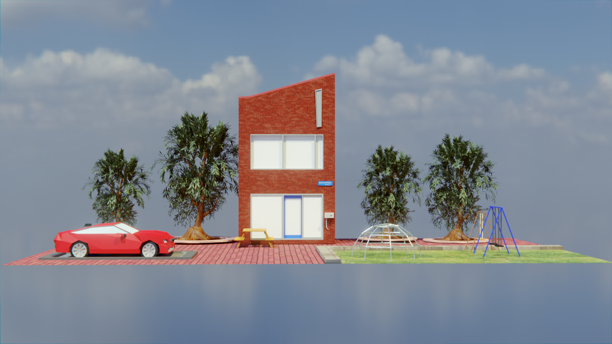

Dit project was in de eerste klas. Hierbij moesten we kijken hoe we de samenleving veiliger kunnen maken. We mochten zelf een onderwerp bedenken en met wat voor progamma we het zouden willen maken. Voorbeelden waren een animatie maken in Blender, een educatieve game maken met Scratch of Unity of een behulpzame website maken met informatie.
Uiteindelijk had ik gekozen voor Blender de opdract daarvoor was als volgt: Bedenk een onderwerp rondom het thema "Veilige Samenleving" en maak daar een animatie van. De animatie duurt minimaal 30 seconden. De animatie bevat aan het eind een aftiteling met de namen van alle teamleden. Ik heb met mijn klasgenoot een filmpje gemaakt over de klimaat verandering en vooral over zee waar de plastic soep bijhoort.
Project Next genaration studo
Voor dit project moesten we een huis/studio met smart oplossingen maken. Dat moest je doen doormiddel van een schets maken van iddeeën en de objecten in je huis moest je modelerren en daarna 3D printen. Dat was mijn taak de andere kinderen in miijn groepje gingen aan de slag met de code voor de smart oplossingen, de website en de poster maken. Uiteindelijk hadden we vier smart oplossingen en een mooi huis staan.
Project Blender Advanced
Voor dit project moest ik weer met Blender werken. Mijn opdracht was om een huis te maken met een leuke omgeving, ik was heel vrij om te maken wat ik wou. Maar er waren wel een paar eisen: er moest een auto bij en ik moest ook wat complexe objecten maken. Ik vind dat het uiteindelijk heel goed gelukt is. Ik ben trots op mijn rijtjeshuis in een vrijstaande omgeving. 
Project Blender2
Dit is de langste opdracht in Blender waar ik ooit aan gewerkt heb. Ik denk dat dit zeker wel anderhalve maand kosten. Voor deze opdracht moesten we een paar youtube tutorials van Grant Abbit volgen. De style die we gebruikte was low poly. Ik ben zeer tevreden met het eindresultaat!